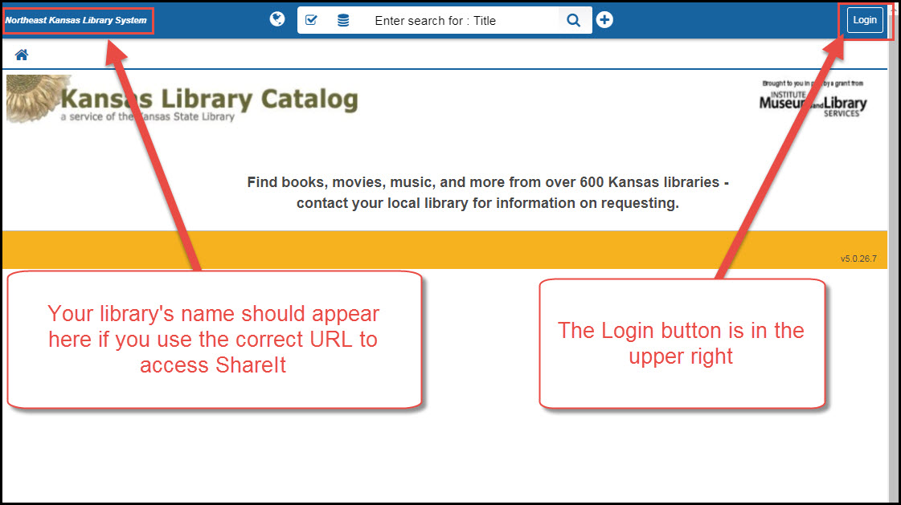
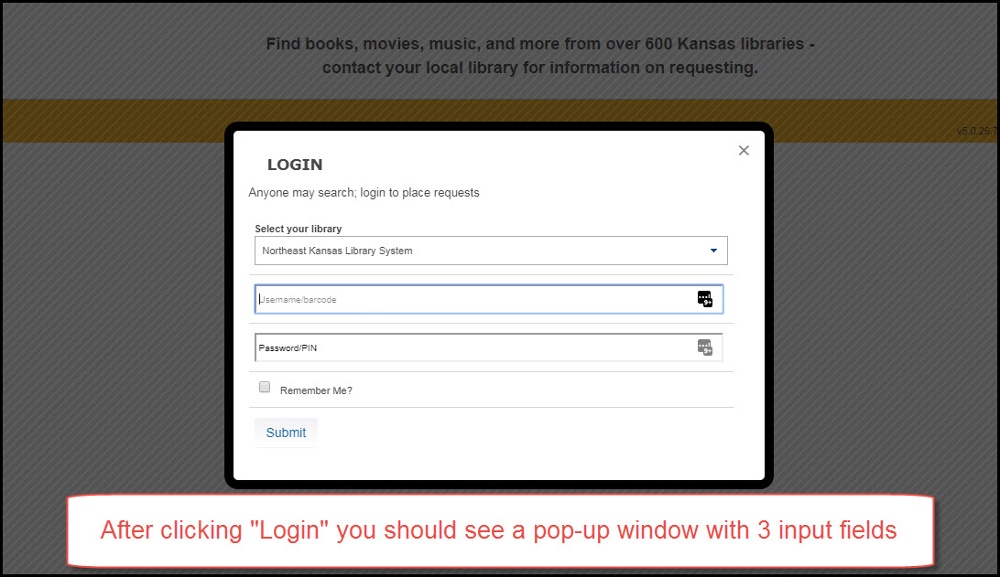
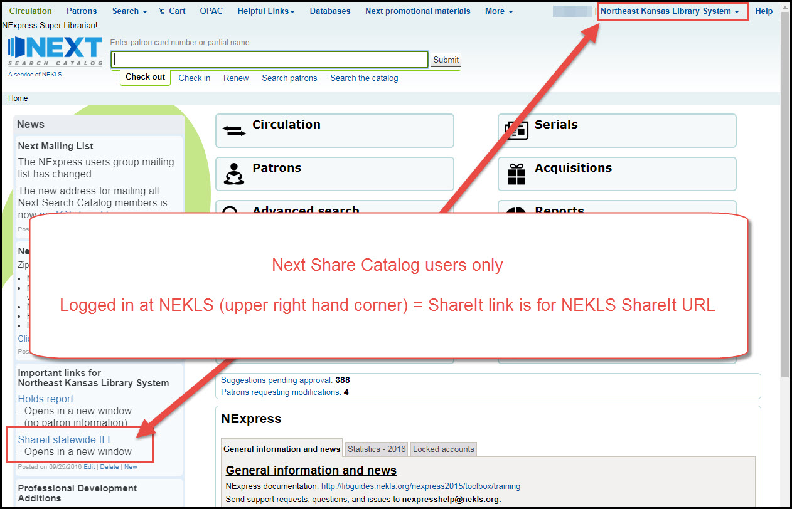

Logging in to Shareit¶
Example logon¶
Go to your ShareIt URL
Logon screen
Login with your ShareIt Usernames and Password
Username and password screen
A successfull login should look like this:

Success screen
If you have trouble logging in, keep reading.
Next Search Catalog URL location¶
If you are a member of the Next consortium, you can find the ShareIt URL for your library on the left side of the home page in the staff client.
Next Share Catalog link screen
URL Troubleshooting¶
If you attempt to log into ShareIt and you do not get the normal login window, you can usually overcome the problem by logging into an alternate URL shown below.
The most common URL problem looks like this:

Kansas Library Catalog screen

Two input boxes screen
If you see either of these scenarios, you can try an alternative URL
http://ksuc-agent.auto-graphics.com/mvc?cid=ksuc&lid=XXX&reset=force
The difference between this URL and the previous one is that the last part of the URL is changed from “over” to “force” (you will need to put your OCLC symbol where the XXX is in this URL too).
You can also try clearing the history/cache on your web browser. In Firefox and Chrome you can accomplish this by typing CTRL-SHIFT-DELETE and following the on-screen instructions to delete all of your saved Cookies, Cache, and Content.
As always, if you have any problems you can contact NEKLS or the State Library of Kansas for assistance. Next Search Catalog members can contact us at nexthelp _at_ nekls.org.